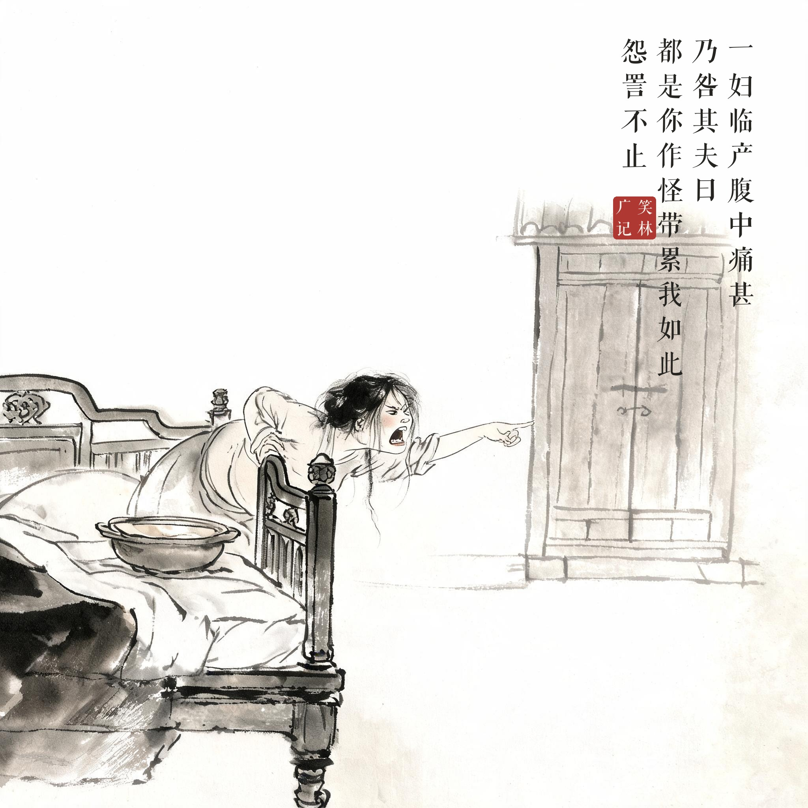
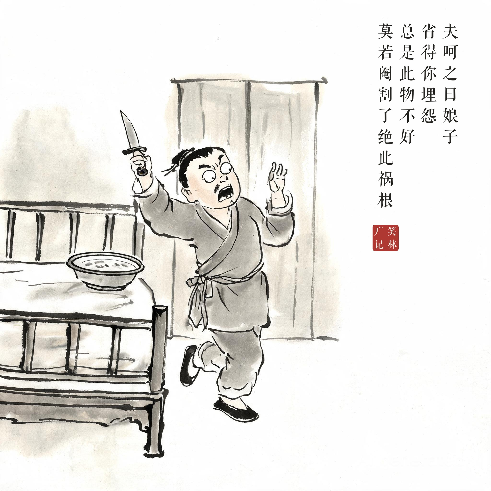
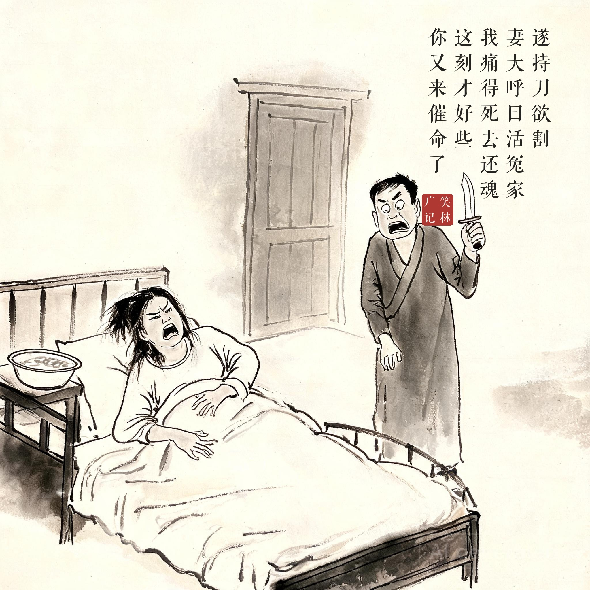

《笑林广记 · 闺风部》（[清]游戏主人纂集）
一妇临产，腹中痛甚，乃咎其夫曰："都是你作怪，带累我如此。"怨詈不止。夫呵之曰："娘子，省得你埋怨，总是此物不好，莫若阉割了，绝此祸根！"遂持刀欲割。妻大呼曰："活冤家！我痛得死去还魂，这刻才好些，你又来催命了。"
一位妇人临产，痛得死去活来，把丈夫骂了个狗血淋头："都是你干的好事，害我受这份罪！"骂个没完。丈夫被吵急了，说："娘子，省得你老埋怨——反正都是那东西不好，不如一刀阉了，永绝后患！"说着真拿起了刀。妻子大叫："活冤家！我疼得死去活来这会儿刚缓过来，你又要来催我的命！"
吵架吵出昏招，昏招换来尖叫——"绝此祸根"四个字在产房外只维持了三秒，喜剧的精髓是自我矛盾。